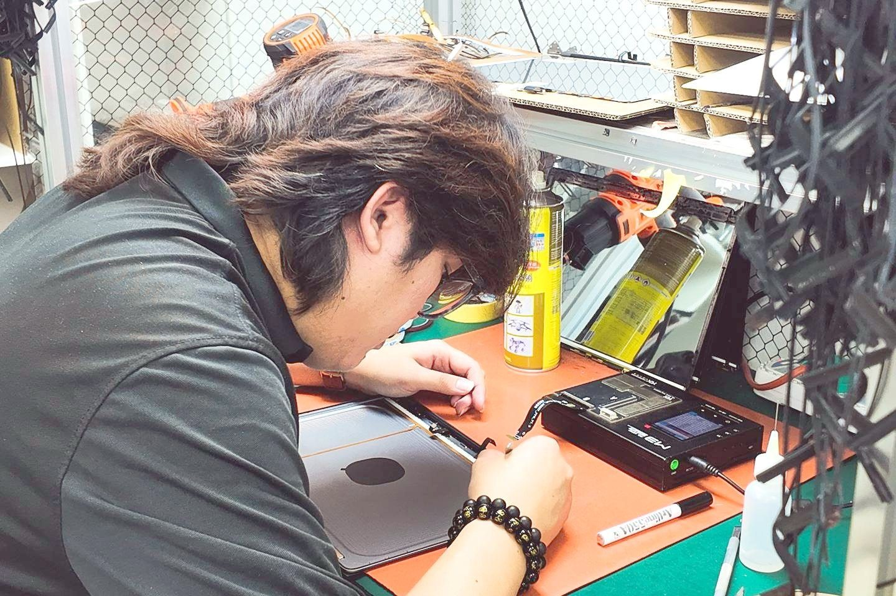

Mac screen repair
Cracked glass, flickering panels and dead backlights on MacBook, iMac and iPad.
Learn moreHome/Ampang
Free diagnostics, a quote before anything is opened, and up to 5 years warranty. Mac, iPad and iPhone repair for Ampang and the rest of the Klang Valley.
free pickup,
free diagnosis

YKL Mac Fix is a specialist Apple repair workshop serving Ampang, Kuala Lumpur and the wider Klang Valley. Every device on our bench is an Apple device, which is why we recognise the same faults quickly instead of working them out from scratch.
If you have been searching for MacBook repair near me, mac repair near me or apple repair near me and getting quotes that read like a price for a new machine, get a second opinion here first. The diagnosis costs nothing and the price is agreed before anything is opened.
We do not have a shopfront in Ampang. Our workshop is in Section 14, Petaling Jaya, and there are two ways to get your device onto that bench.
Ampang is east of the city centre. It is the far side of the Klang Valley from our Section 14 workshop, which is exactly what the free pickup is for. You are welcome to walk in during opening hours, no appointment needed. Or use the free pickup: it covers the whole Klang Valley on jobs above RM500, so send us a photo of the problem on WhatsApp and we will collect the device and bring it back to you.
Mac screen repair and MacBook screen repair, MacBook Pro battery replacement, logic board and water damage work, keyboards, trackpads, speakers, charging ports, and storage and memory upgrades. MacBook Air, MacBook Pro, iMac, Mac mini, Mac Pro, iPad and iPhone.
Board-level repair is done in-house at our own bench, with micro-soldering and reballing under a stereo microscope. That is the reason Macs written off elsewhere often leave here working.
Every one of these is diagnosed free before we quote you.
Cracked glass, flickering panels and dead backlights on MacBook, iMac and iPad.
Learn moreSwollen packs, fast drain and the Service Recommended warning in macOS.
Learn moreBoard-level diagnosis, micro-soldering and reballing for Macs that will not power on.
Learn moreSticky keys, repeating characters and trackpads that will not click.
Learn moreMore storage and memory for older Macs, with your data migrated across.
Learn moreOur workshop is at No 16, 3rd & 4th Floor, Jalan 14/20, Section 14, 46100 Petaling Jaya. Ampang is east of the city centre. It is the far side of the Klang Valley from our Section 14 workshop, which is exactly what the free pickup is for.
Yes. Pickup is free across the Klang Valley on jobs above RM500. Send us a photo of the problem on WhatsApp with your location and we will arrange a time.
Nothing. We test the device, find the actual fault and give you a price. Nothing is opened until you approve the quote.
Most MacBook Air and MacBook Pro batteries are replaced the same day. Older models where the pack is glued into the top case take longer, and you get the timeline with your quote.
Selected repairs and upgrades carry up to 5 years of warranty on the work and the parts we fitted. The exact term for your job is stated on your invoice.
Yes, and it costs nothing to look. Board-level repair is a different skill set from swapping parts, so a board written off elsewhere is often repairable here.
Free diagnostics at all three branches. Tell us the symptom and we will tell you what it takes to fix it.